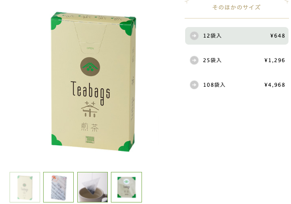
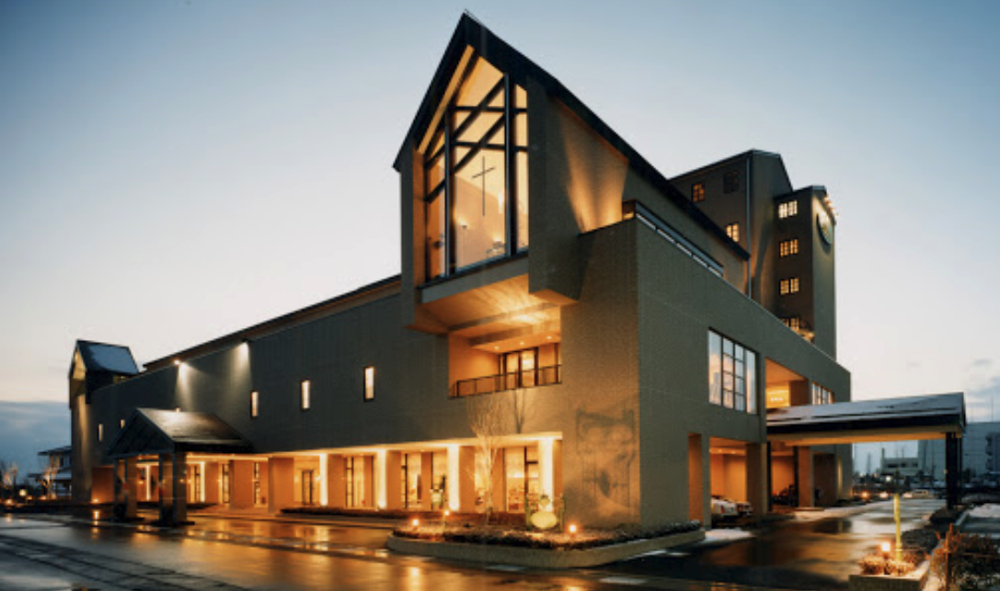

のんびりるんるんの旅Again！
【天気予報】 雪は降りませんように！！
▼▼▼新横浜の天気▼▼▼
＜新横浜駅＞
・ロビーに集合！
・荷物を預ける
＜横浜駅＞
・「清月堂」（高島屋 横浜店）で抹茶&甘味！
・「治一郎」（ジョイナス横浜）でプリンテイクアウト

・「ビアードパパ」（横浜ポルタ店）でテイクアウト
・横浜デパ地下で明日のスイーツゲット！あればお茶も買おう
横浜高島屋もそごう横浜店も最近デパ地下を一部リニューアルしたんだって
★おすすめの候補1：CHEESE GARDEN（高島屋 横浜店）
まえ食べた時フィナンシェがめっちゃ美味しかった！
★おすすめの候補2：Butters（高島屋 横浜店）
なんか美味しそう！
★おすすめの候補3：YOKUMOKU(ヨックモック)（高島屋 横浜店）
安定のヨックモック先生
★おすすめの候補4：一保堂茶舗（高島屋 横浜店）
京都本店のお茶屋さん

★おすすめの候補5：川原製茶（高島屋 横浜店）
伊勢茶
★その他も見てみよ！
＜新横浜駅＞
・温野菜
・チェックイン
・次々回のリサーチ
①琵琶湖周辺と近江牛すき焼きの旅
●ホテル
★おすすめの候補1：彦根キャッスル リゾート&スパ
彦根キャッスル
お城は見えない部屋だと少し安い良さそうじゃない？
★おすすめの候補2：Hotel & Resorts NAGAHAMA
Hotel & Resorts NAGAHAMA
結構綺麗で良さそうな感じする
★おすすめの候補3：北ビワコホテルグラツィエ
北ビワコホテルグラツィエ

式場メインだけどホテルも綺麗そう。公式HPから予約した方がいいかも？
★などなどのホテルたちとか他も！
②美味しい静岡茶と浜松周辺の散策と景色を楽しむ旅
●ホテル
★おすすめの候補1：グランドホテル浜松
グランドホテル浜松

ここも綺麗な感じする
★おすすめの候補2：オークラアクトシティホテル浜松
オークラアクトシティホテル浜松
ビルの高さが高い&オークラブランド！1人1万円ちょっとぐらい？
12時チェックアウトプランもありそうで最高
●観光
★おすすめの候補1：ぬくもりの森
ぬくもりの森
バスで40分ぐらい。メルヘンな世界で晴れてたら楽しそう。映える！
★おすすめの候補2：うなぎパイ工場見学
うなぎパイ工場見学
意外と面白いかも。うなぎパイは美味しい！またさくパイも食べたいけどね
★おすすめの候補3：弁天島海浜公園
電車で10分ぐらい。景色が良さそう。ただめっっちゃ寒そう
●カフェ
★おすすめの候補1：おかしの森&蔵のカフェ
おかしの森&蔵のカフェ
古民家を改装した、いい感じのカフェるんるんとなっております
〜本日の犬夜叉〜
・第18話：人生の一大事
＜新横浜駅＞
・ジョナサンモーニング
（10時半までだから10時には出ないと；；）
・のんびりしつつ、映画タイム
〜るろうに剣心〜
京都大火編
伝説の最後編
〜犬夜叉〜
映画編
＜新横浜駅＞
・夕食買いに出てお弁当テイクアウト
★おすすめの候補1：崎陽軒のしゅうまい弁当（キュービックプラザ新横浜）
横浜のお弁当と言えば崎陽軒！
〜本日の犬夜叉〜
・第19話：琥珀の欠片
＜鎌倉駅＞
・鶴岡八幡宮
＜和田塚駅（鎌倉の隣駅）＞
・「無心庵」でおしるかorぜんざい！
<江ノ島駅(和田塚駅から20分)>
・江ノ島さんぽ（寒いから少しだけ）

＜新横浜駅（帰りの電車は1時間ぐらい）＞
・夕食テイクアウト
★おすすめの候補1：ピザ：マルデナポリ（新横浜プリンスペペ）
なんか美味しそう！
★おすすめの候補2：ピザ：ピザーラに頼む
ホテルまで持ってきてくれるかは要確認！早めに電話！
★コンビニでのテイクアウトでもおけい！
〜本日の犬夜叉〜
・第20話：四魂の玉が完成する時
＜新横浜駅＞
・荷物預けてチェックアウト
＜元町・中華街駅＞
・ホテルニューグランドでいい感じにランチ。体調が微妙だったら適当なカフェに変更
・山下公園のさんぽ
・赤れんが倉庫のさんぽ
＜新横浜駅＞
・荷物回収
・解散；；
気をつけて帰ってね！